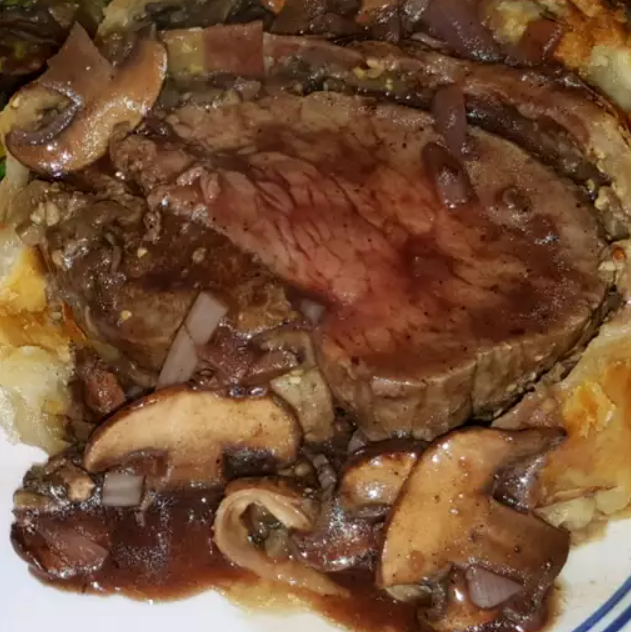

Beef Wellington

Description
This beef Wellington recipe is perfect for entertaining if you want to impress your guests.
It was given to me when I lived in England. It's best served with the center slightly pink. Enjoy!
Ingredients
- 2 ½ pounds beef tenderloin
Step 6
- 4 tablespoons butter, softened, divided
- 2 tablespoons butter
- 1 onion, chopped
- ½ cup sliced fresh mushrooms
- 2 ounces liver pate
- salt and pepper to taste
- 1 (17.5 ounce) package frozen puff pastry, thawed
- 1 large egg yolk, beaten
- 1 (10.5 ounce) can beef broth
- 2 tablespoons red wine
Steps
- Preheat the oven to 425 degrees F (220 degrees C)
- Place beef tenderloin in a small baking dish. Spread 2 tablespoons softened butter over beef.
- Bake in the preheated oven until browned, 10 to 15 minutes. Remove beef from the pan and reserve pan juices; allow beef to
cool completely.
- Increase oven temperature to 450 degrees F (230 degrees C).
- Melt 2 tablespoons butter in a skillet over medium heat. Sauté onion and mushrooms in butter for 5 minutes. Remove from
heat and let cool.
- Mix together paté and remaining 2 tablespoons softened butter in a bowl; season with salt and pepper. Spread paté mixture
over beef. Top with onion and mushroom mixture.
Return